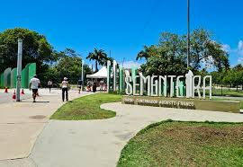

parque da sementeira

O parque pode ser utilizado pelos aracajuanos e turistas para prática de atividades esportivas e de lazer, pesquisas ambientais além de outras atividades em contato com a naturza. O espaço conta com um parque infantil, campo de futebol, quadra poliesportiva, espaço com aparelhos para exercícios físicos, pista para caminhada, quiosques para piqueniques, sanitários lagos, e iluminação adequada.
Atrativos do Parque da Sementeira
- Parque infantil
- Campo de futebol
- Quadra poliesportiva
- Aparelhos para exercícios físicos
- Pista para Caminhada
- Quiosques para piqueniques
- Sanitários
- Lagos e Áreas verdes
- Iluminação Adequadas para visitas noturnas